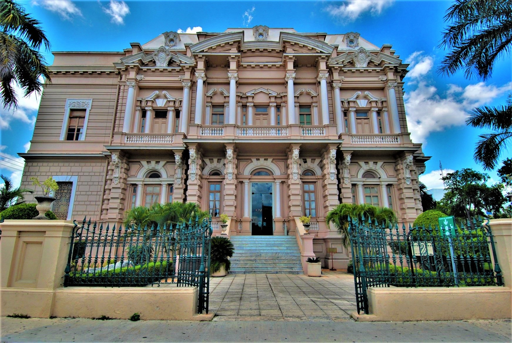

Museo Regional Palacio Cantón
Ubicado en el majestuoso Paseo de Montejo, este palacio de arquitectura ecléctica de principios del siglo XX alberga magníficas exposiciones arqueológicas temporales que narran la rica historia del pueblo maya prehispánico.